Welcome to Safe Savor Society, where we are dedicated to helping others lead healthier lives through education on safer, toxin-free foods and sustainable living practices. Our mission is to transform the food system for future generations' well-being and make a positive impact on both children and adults. Join us in creation a healthier and more sustainable world together!
 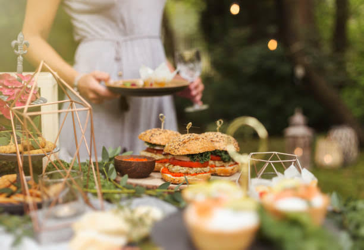
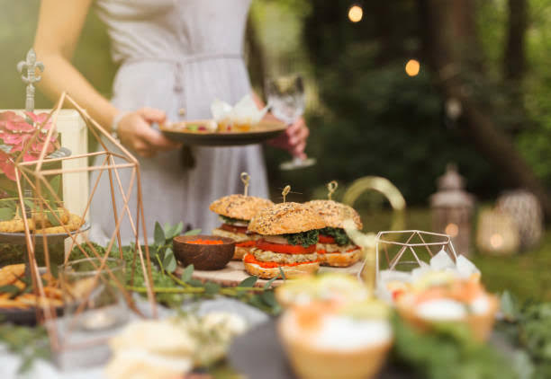
 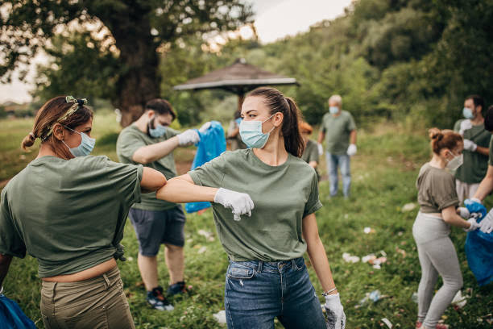
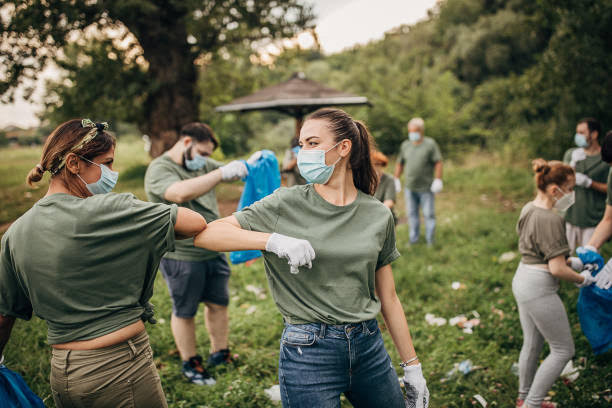


 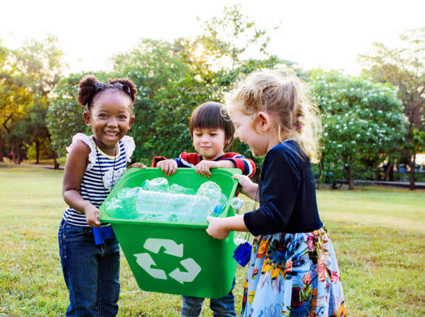
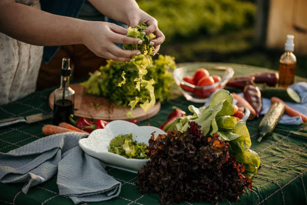
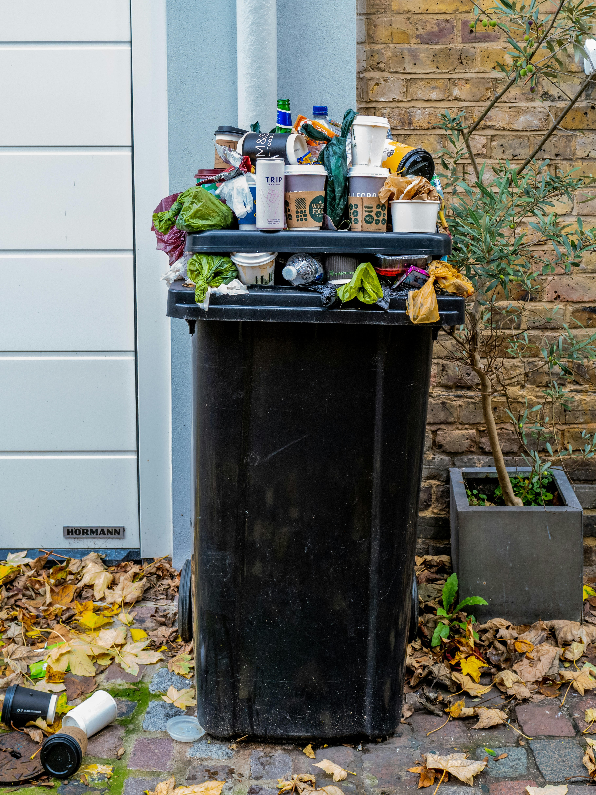
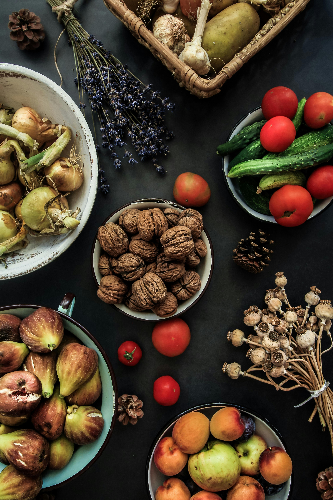
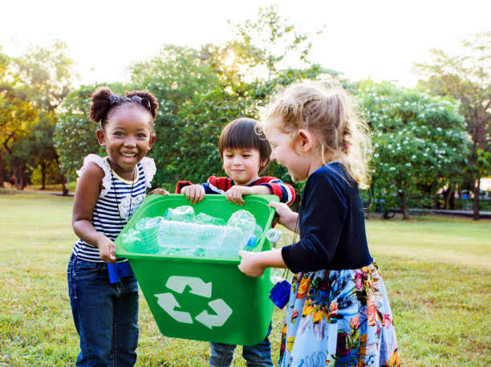
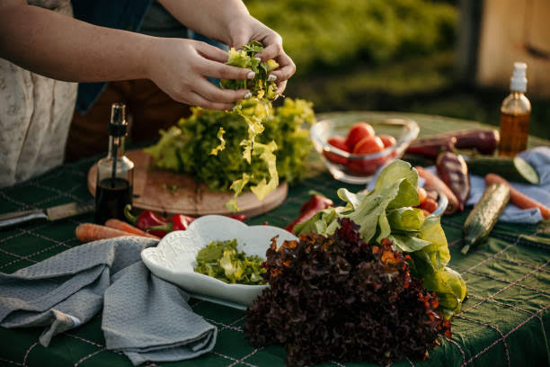
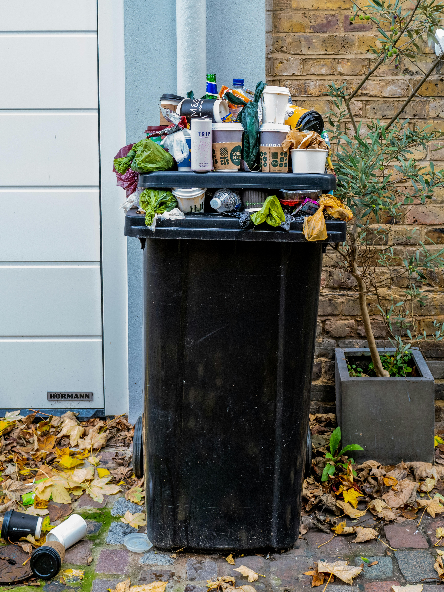
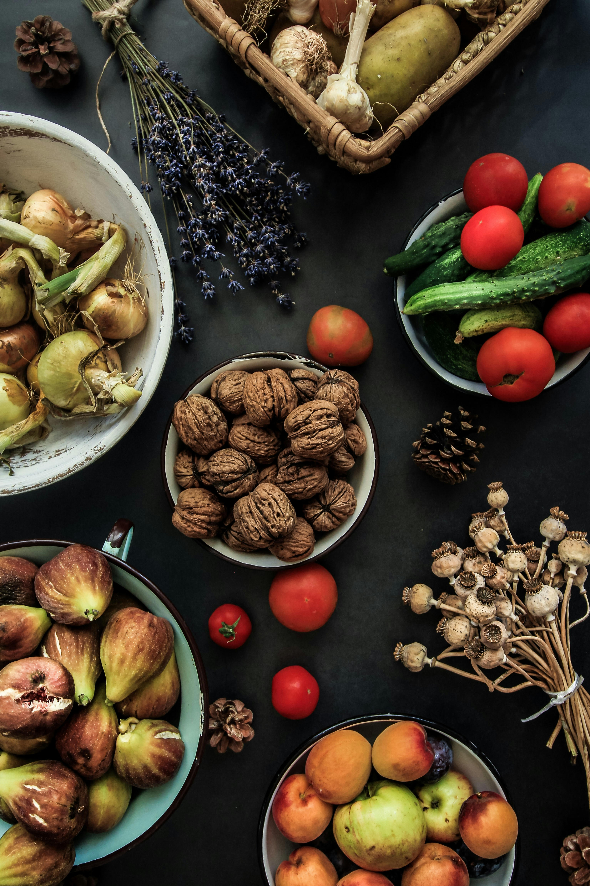
Welcome to Safe Savor Society, where our passion lies in revolutionizing how we approach food and health. Founded on the belief that everyone deserves access to safer, toxin-free foods and sustainable living practices, Safe Savor Society is dedicated to educating and empowering individuals and communities.
At Save Savor Society, our mission is clear: Fix the food system by promoting awareness of safer food choices and advocating for sustainable lifestyles. We aim to inspire generations by equiping individuals with the knowledge and resources needed to make informed decisions about what they eat and how they live.
Through educational resources, charity events, workshops, and community engagement, we strive to:
We educate on identifying and choosing foods free from harmful additives and toxins, supporting better health outcomes.
We champion sustainable living practices that reduce enviromental impacts and support long-term health and wellness.
By fostering awareness and action today, we aim to create a healthier future for generations to come.
We envision a world where every individual has the knowledge and ability to make choices that promote personal health and the health of our planet. Together we can create meaningful change and build a community commited to safer, healthier, and more sustainable living.
Whether you are passioniate about food saftey, sustainability, or simply living a healthier life, Safe Savor Socity welcomes you! Join our community, explore our resources, and together lets make a difference in the way we eat, live, and thrive.
At Safe Savor Society, we believe that positive change starts with community action. There are many ways you can support our mission to promote safer, toxin-free foods and sustainable eating practices. Whether you have a few minutes, hours, or more, your contribution can make a significant impact!
Join us in our efforts to educate and inspire others by Volunteering your time and skills. We offer a range of volunteer opportunities including:
Your financial support helps us continue our work and reach more people. Donations are used to fund our educational programs, community events, and advertising efforts. Every contribution, big or small, makes a difference. Consider making a one-time donation or becoming a monthly supporter.
We are always looking for like minded organizations, businesses, and individuals to partner with. If you share our passion for safer foods and sustainable living, lets work together to create a healthier future. Partner opportunities include:
Stay connected and informed by joining our online community. Follow us on social media, sign-up for our newsletter, and participate in our discussion board. Together we can share tips, success stories, and support each other in our journey to healthy living.
Sometimes the smallest actions can lead to the biggest changes. There are some simple ways you can start making a difference today:
Have questions or want to learn more about how you can get involved? Visit our contact page! We would love to hear from you and explore the ways we can work together to achieve our mission!